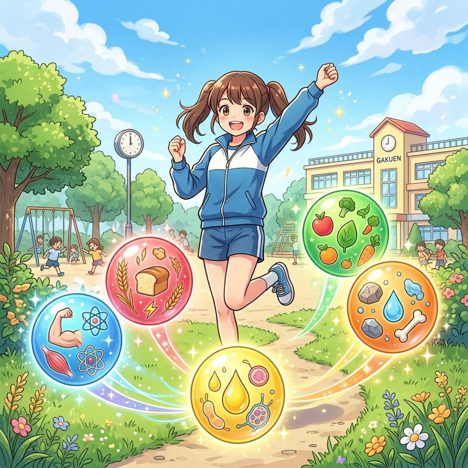
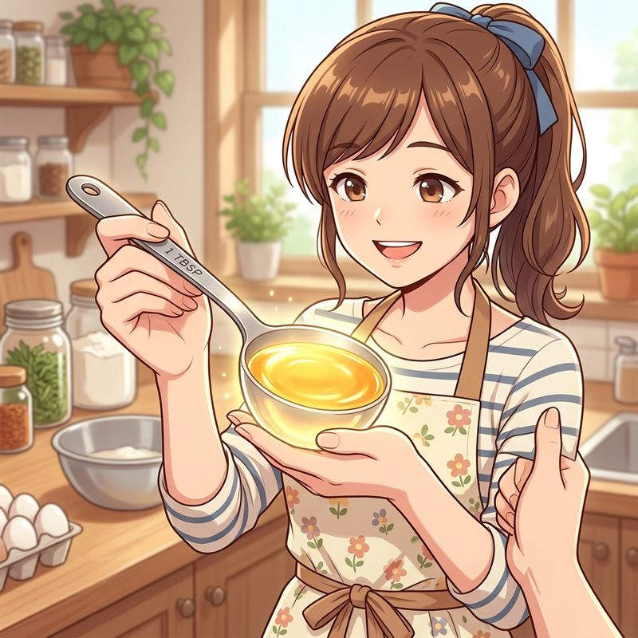
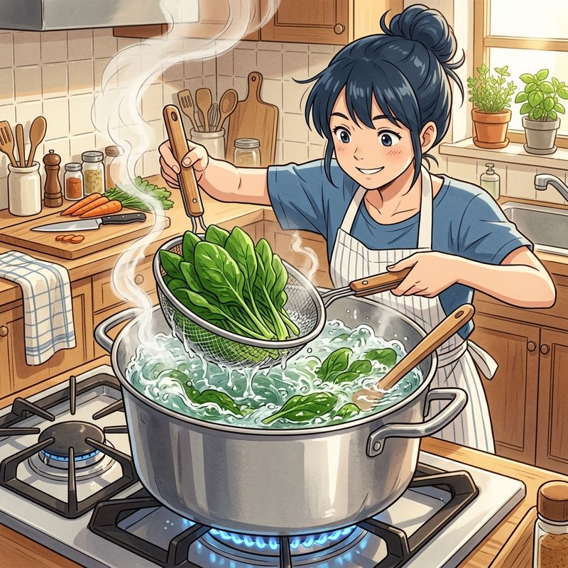

中学家庭（食生活と調理）
単元7: 食生活と栄養、調理の基本
健康的な生活に不可欠な「食生活」と「調理」について整理します。五大栄養素や6つの基礎食品群の分類、食品表示やアレルギー、食中毒の予防、そして計量や下ごしらえなどの調理の基礎技術は、定期テストのペーパーテストで毎回必ず出題される超重要単元です！
1. 健康と栄養（五大栄養素と食品群）
健康の基本は「食事・運動・休養（睡眠）」の3本柱です。偏った食習慣は生活習慣病を引き起こします。
① 五大栄養素（ごだいえいようそ）の役割
| 栄養素名 | 主な役割と詳細 | 代表的な食品 |
|---|---|---|
| たんぱく質 | 消化されてアミノ酸になり、筋肉や血液など体の組織をつくる。 | 肉、魚、卵、大豆製品 |
| 無機質（ミネラル） | 骨や歯などの組織をつくり、体の調子を整える。 ※鉄：血液（赤血球）のもとになり、不足すると貧血を招く。 |
牛乳、小魚、海藻、レバー |
| ビタミン | 主に体の調子を整える。 | 野菜、果物、キノコ類 |
| 炭水化物 | 主に脳や体を動かすエネルギーの源になる。 ※糖質と食物繊維（腸を整える）からなる。 |
米、パン、麺類、いも類 |
| 脂質 | 脂肪としてエネルギー源になる。1gあたり約9kcalと最もエネルギー効率が大きい。 | サラダ油、バター、マヨネーズ |
- 💡 水：体重の約60%を占め、栄養素の運搬、老廃物の排出、体温調節（汗）などの重要な役割を持ちます。

体を構成し、調子を整える「五大栄養素」
② 6つの基礎食品群（しょくひんぐん）
栄養素の特徴によって、食品を6つのグループに分類したものです。テストで「何群に含まれるか」が非常によく出題されます。
- 1群：肉・魚・卵・大豆（主にたんぱく質 ➔ おかずの「主菜」に使用）
- 2群：牛乳・乳製品、小魚、海藻（主にカルシウム・無機質）
- 3群：緑黄色野菜（主にビタミンA・カロテン）
- 4群：その他の野菜、果物（主にビタミンC）
- 5群：米・パン・いも・砂糖（主に炭水化物 ➔ 主食）
- 6群：油脂・バター・ドレッシング（主に脂質）
③ 献立（こんだて）と食事の習慣
- 一汁三菜（いちじゅうさんさい）：主食（ご飯）に、汁物（味噌汁など）と、おかず3品（主菜1品＋副菜2品）を組み合わせる和食の基本型。
- 朝食の役割：睡眠中に下がった体温を上昇させ、脳や体全体の活動スイッチを入れる重要な働きがあります。
2. 食品の選択と安全性
① 新鮮な食品の選び方と表示
- 旬（しゅん）／出盛り期：野菜や魚などの生鮮食品が、最も多く収穫されて味も良く、栄養価が高く、価格も安くなる時期。
- 鮮度の見分け（肉・魚）：スーパー等の切り身で、パックの底に赤い液汁（ドリップ）がにじみ出ていない新鮮なものを選びます。
- 消費期限（しょうひきげん）：お弁当や総菜など傷みやすい食品に表示される、安全に食べられる期限（およそ5日以内）。
- 賞味期限（しょうみきげん）：スナック菓子や缶詰など品質変化が遅い食品に表示される、美味しく食べられる期限。
- 食物アレルギー表示：アレルギー物質を含む加工食品は、法的に現在8品目（卵、乳、小麦、えび、かに、落花生、そば、くるみ）の表示が義務付けられています。
② 食中毒予防の三原則
細菌やウイルスによる食中毒を防ぐための基本です。
- つけない（手洗い、器具の洗浄消毒）
- 増やさない（冷蔵・冷凍保存、素早く食べる）
- やっつける（加熱殺菌 ➔ 中心部まで十分に熱を通す）
3. 食生活の社会的課題
- 孤食（こしょく）：家族が一緒に住んでいるにもかかわらず、一人で食事をとること。
- 地産地消（ちさんちしょう）：地域で生産された農林水産物を、その地域で消費（食べる）する取り組み。輸送にかかるCO2排出も抑えられます。
- 食料自給率（しょくりょうじきゅうりつ）：国内で消費される食料のうち、国内で生産された割合。日本は輸入頼みのため非常に低水準です。
- 食品ロス（フードロス）：まだ食べられるのに捨てられてしまう食品のこと。
- フード・マイレージ：食品の輸送距離×輸送量で計算される指標。大きいほど環境（CO2排出）への負荷が大きいことを示します。
4. 調理の基本技術と下ごしらえ
① 計量のルール
- 大さじ1杯：15mL（cc）
- 小さじ1杯：5mL（cc）
- 💡 計量スプーンで粉末（砂糖や小麦粉など）をはかるときは、すりきりベラ等で山を平らにならした「すりきり1杯」にします。液体は表面張力で盛り上がるまで入れます。
② 食材の下処理と加熱の特徴
- 鮭（さけ）の分類：身はサーモンピンクですが、学術上は「白身魚」に分類されます（筋肉が赤くなる赤身魚と異なり、エサの甲殻類由来の着色であるため）。
- 赤身魚と白身魚の加熱変化：
- 赤身魚（マグロ等）：生のときは比較的硬いが、加熱すると身が締まる（やわらかい白身魚と対比）。
- 褐変（かっぺん）：ごぼうやりんごを切り口のまま放置すると、成分が空気中の酸素と反応して黒っぽくなる現象（水や塩水にさらして防ぎます）。
- 青菜（ほうれん草など）の下ゆで：色鮮やかに仕上げ、アク（シュウ酸など）を抜くため、沸騰したたっぷりの湯でフタをせず短時間でゆで、すぐに冷水にとります。
- 煮出し（水から煮る）：スープやだし汁を作る際、肉などのうま味を汁の中に出したい場合は、沸騰した湯ではなく水から入れてじっくり煮出します。

大さじ1杯は15mL（すりきり）

青菜はたっぷりのお湯でフタをせずゆでる
🔥 定期テスト対策・暗記のコツ
① 6つの基礎食品群の見分け
「1群：肉・魚・卵・大豆」「2群：牛乳・小魚・わかめ（骨をつくるカルシウム）」「3群：人参・ほうれん草（緑黄色野菜）」「4群：キャベツ・レモン（淡色野菜・果物）」。特に2群と3群はテストで超頻出です！
② 計量の「大さじ＝15mL」
「大さじ＝15mL」「小さじ＝5mL」です（大さじは小さじの3倍）。カップ1杯は通常200mLです。この数値の組み合わせは計算問題としても時々出ます。
③ アレルギー義務表示「8品目」
「卵・乳・小麦・えび・かに・そば・落花生」に、最近新しく「くるみ」が加わり8品目になりました。最新の教科書改訂ポイントなので、テストで非常に狙われやすいです！